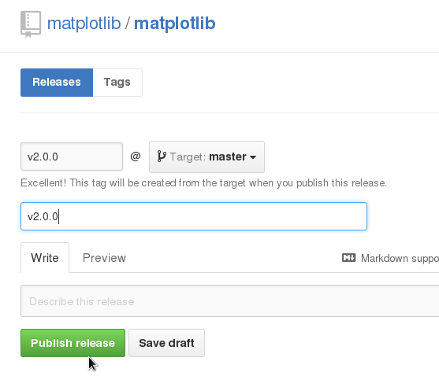

Continuous Delivery
an approach in which teams ensure that every change to the system is releasable, and that we can release any version at the push of a button. Continuous Delivery aims to make releases boring, so we can deliver frequently and get fast feedback on what users care about. ThoughtWorks
Continuous Delivery
Driving principles:
- Make it easy for anybody to get built executables from the HEAD of a repository
- Automate build
Why?
Pros
- Fast user feedback
- Simplified (trivial) releases
- Easy development version testing
Cons
- Requires build automation
- Many build artifacts
Why I care
- cartopy - 2 minor releases / 15 months
- Iris - 2 minor releases / 16 months
- matplotlib - 2 minor releases / 21 months
How can we deploy non-compiled packages automatically?
For pure python packages, simply†:
$> cat .travis.yml
...
after_success:
python setup.py register sdist upload
† There are a few other things that need to be dealt with in configuring TravisCI.
Complexities of continuous delivery
There are some things we need to think about:
- Versioning
- Toggling major changes
Versioning


Versioning
Toggling major changes
To maintain continuity between releases, we want to toggle major changes.
from __future__ import print_functionwith matplotlib.feature.extensible_toolbar: ...
There is already an example of this kind of functionality in iris.Future.
Deploying compiled binary packages automatically
To build binary packages, we need access to Windows, OSX and Linux machines.
| TravisCI | AppVeyor | CircleCI | |
| OSX | X | ||
| Linux | X | X† | |
| Windows | X |
† CircleCI gives us the ability to build using our own docker image, allowing us to support older libc versions.
Deploying compiled binary packages automatically
An example project can be found at pelson/package_with_continuous_delivery.
Should we adopt continuous delivery?
Not necessarily, but we should dramatically shorten our release cycles with automation.
